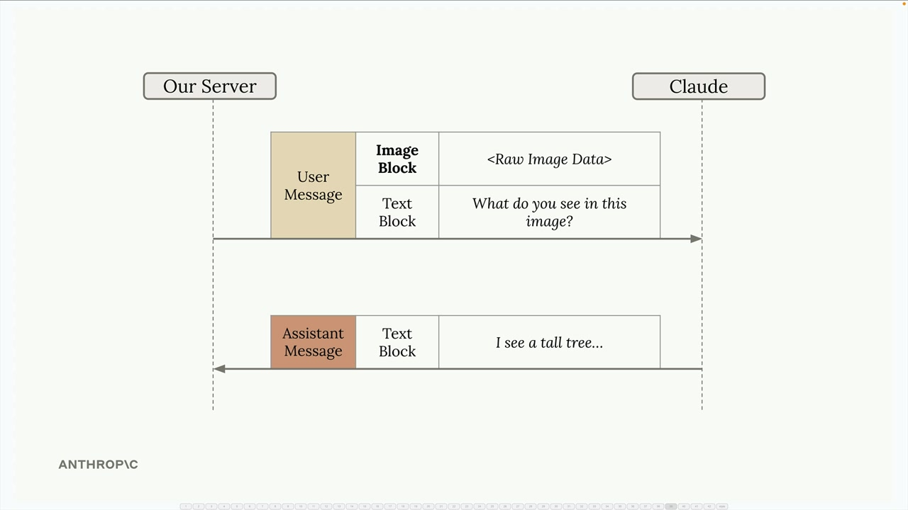
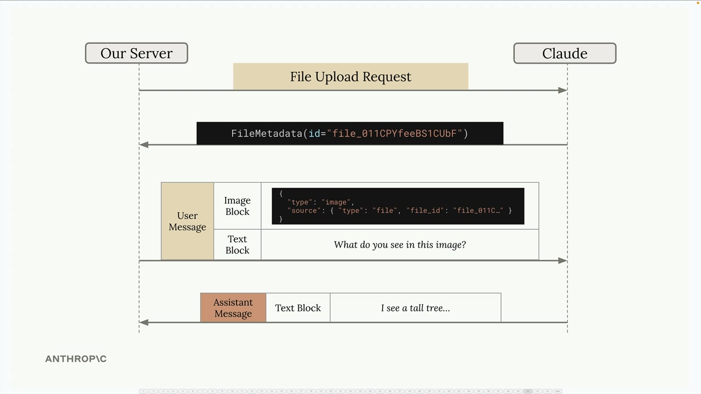
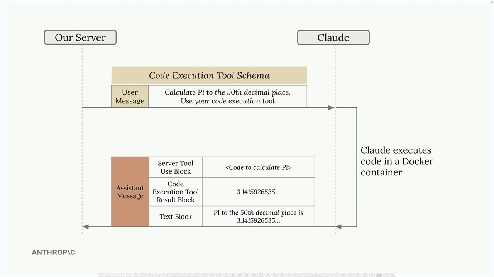
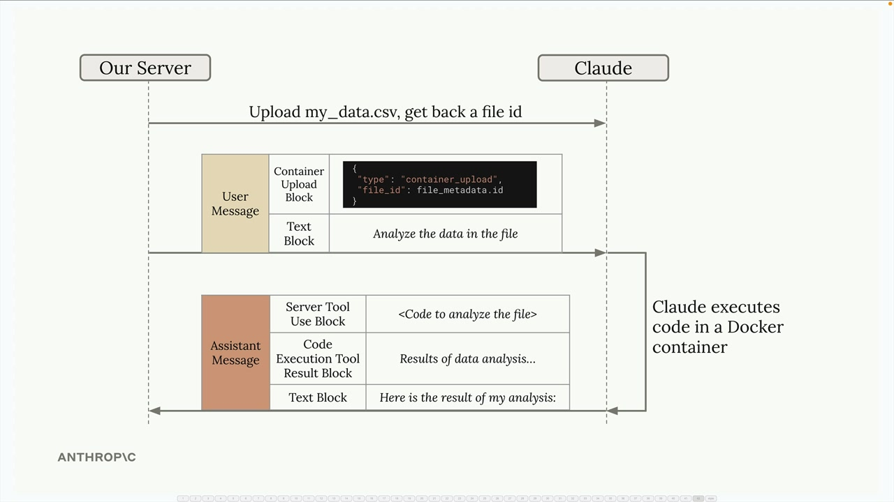
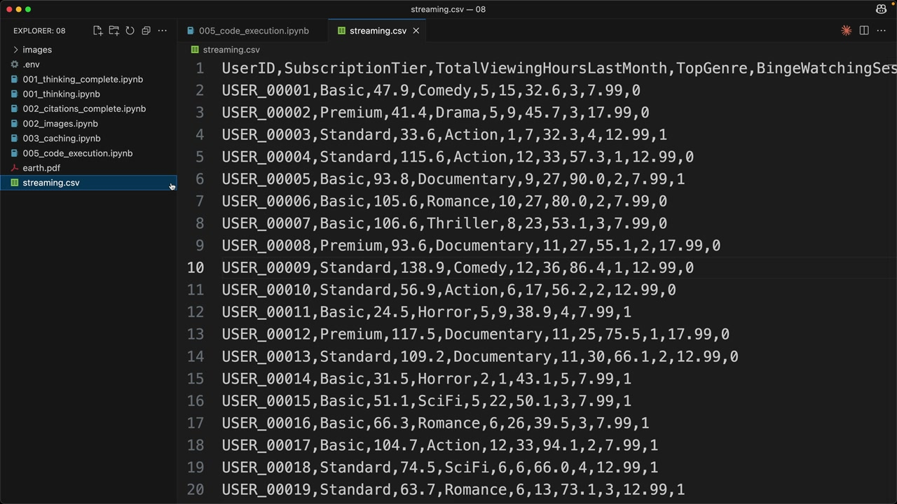
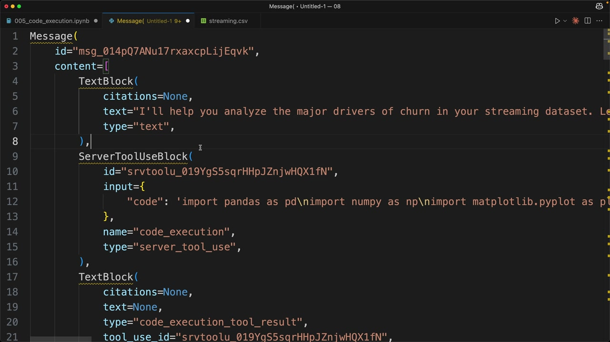
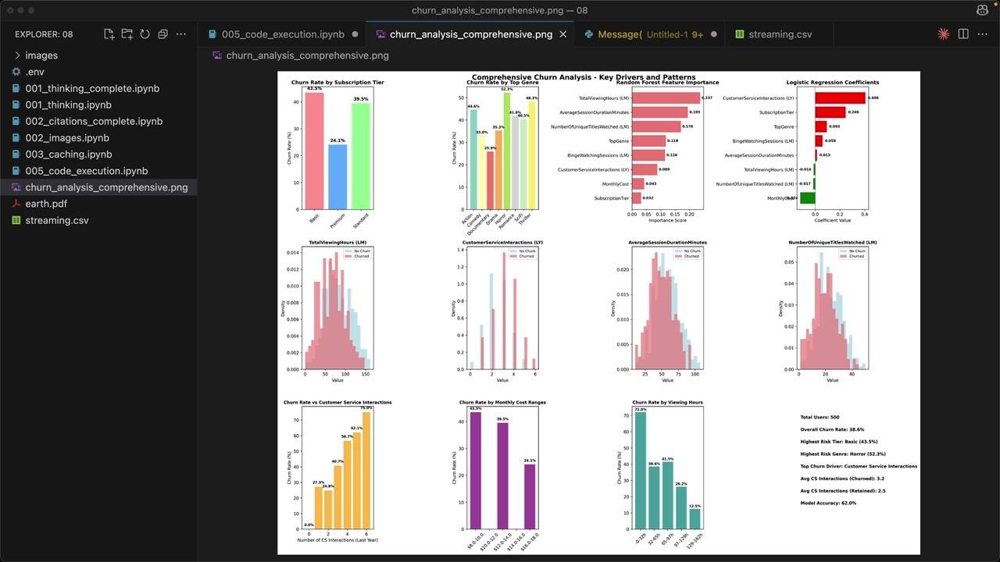

Выполнение кода и Files API
Чему научитесь
Видео 11:07 и текст урока
К концу урока вы сможете:
- загружать файлы через Files API и ссылаться на них по ID;
- подключать серверный инструмент выполнения кода;
- анализировать данные в контейнере и скачивать созданные файлы.
Видео и текст урока.
Смотреть урок на Skilljar Code execution and the Files API · 11:07В Anthropic API есть две мощные возможности, которые отлично работают вместе: Files API и выполнение кода (code execution). На первый взгляд они кажутся отдельными, но вместе открывают интересные возможности поручать Claude сложные задачи.
Files API
Files API — альтернативный способ работать с загрузкой файлов. Вместо того чтобы вставлять изображения или PDF прямо в сообщения в base64, можно заранее загрузить файлы и потом ссылаться на них.

Как это работает:
- загружаете файл (изображение, PDF, текст и т. д.) отдельным вызовом API;
- получаете объект метаданных с уникальным ID файла;
- в следующих сообщениях ссылаетесь на этот ID вместо сырых данных файла.

Это особенно удобно, когда на один файл нужно ссылаться много раз или когда файлы большие и включать их в каждый запрос неудобно.
Инструмент выполнения кода
Выполнение кода — серверный инструмент, реализацию которого писать не нужно. Вы просто добавляете в запрос готовую схему инструмента, и Claude при необходимости выполняет код на Python в изолированном Docker-контейнере.

Главные особенности среды выполнения:
- изолированный Docker-контейнер;
- нет доступа к сети (нельзя обращаться к внешним API);
- Claude может выполнять код много раз за один разговор;
- результаты перехватываются, и Claude интерпретирует их в итоговом ответе.
Files API и выполнение кода вместе
Настоящая сила — в сочетании. Раз у контейнеров нет сети, Files API становится главным способом передать данные в среду выполнения и получить их обратно.

container_upload и текстом — и ответ из кода, результатов и текста.Типичный процесс:
- загрузить файл с данными (например, CSV) через Files API;
- добавить в сообщение блок
container_uploadс ID файла; - попросить Claude проанализировать данные;
- Claude пишет и выполняет код для обработки файла;
- Claude может создавать результаты (например, графики), которые можно скачать.
Практический пример
Возьмём реальный пример с данными стримингового сервиса. CSV-файл содержит информацию о пользователях: тарифы, привычки просмотра и то, ушёл ли пользователь (отменил подписку, churn).

streaming.csv: UserID, SubscriptionTier, TotalViewingHoursLastMonth и другие столбцы.Сначала загрузим файл вспомогательной функцией:
file_metadata = upload('streaming.csv')
Затем создадим сообщение, в котором есть и загруженный файл, и просьба об анализе:
messages = []
add_user_message(
messages,
[
{
"type": "text",
"text": """Run a detailed analysis to determine major drivers of churn.
Your final output should include at least one detailed plot summarizing your findings."""
},
{"type": "container_upload", "file_id": file_metadata.id},
],
)
chat(
messages,
tools=[{"type": "code_execution_20250522", "name": "code_execution"}]
)
Что приходит в ответе
Когда Claude выполняет код, в ответе есть блоки нескольких типов:
- текстовые блоки — анализ и пояснения Claude;
- блоки server tool use — код, который Claude решил выполнить;
- блоки результатов выполнения кода — вывод от запуска кода.

server_tool_use с кодом на pandas и результат выполнения.Claude может выполнить код несколько раз за один ответ, постепенно наращивая анализ. Каждый цикл выполнения включает код и его результаты.
Скачивание созданных файлов
Одна из самых мощных возможностей — Claude может создавать файлы (графики, отчёты) и делать их доступными для скачивания. Созданная визуализация сохраняется в контейнере, и её можно скачать через Files API.
Ищите в ответе блоки с типом "code_execution_output" — в них ID созданных файлов:
download_file("file_id_from_response")

В итоге получается полноценный анализ с профессиональными визуализациями, на которые вручную ушло бы немало кода.
Не только анализ данных
Анализ данных — естественное применение, но связка Files API и выполнения кода открывает много возможностей:
- обработка и преобразование изображений;
- разбор и преобразование документов;
- математические вычисления и моделирование;
- генерация отчётов с собственным оформлением.
Главное — вы можете поручать Claude сложные вычислительные задачи, сохраняя контроль над входом и выходом через Files API. Получается мощный процесс, в котором Claude становится помощником-программистом, который действительно выполняет и дорабатывает решения.
Дальше
Блок пройден. В оригинале после этого урока идёт официальный квиз Skilljar — Quiz on features of Claude (7 вопросов, проходится на Skilljar). Проверить себя можно и нашим пробным экзаменом по возможностям Claude.
Оригинал урока: Code execution and the Files API.